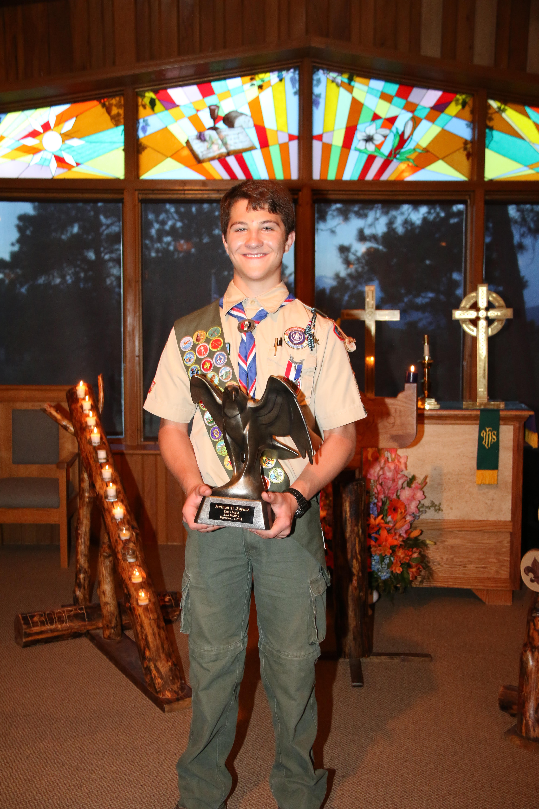
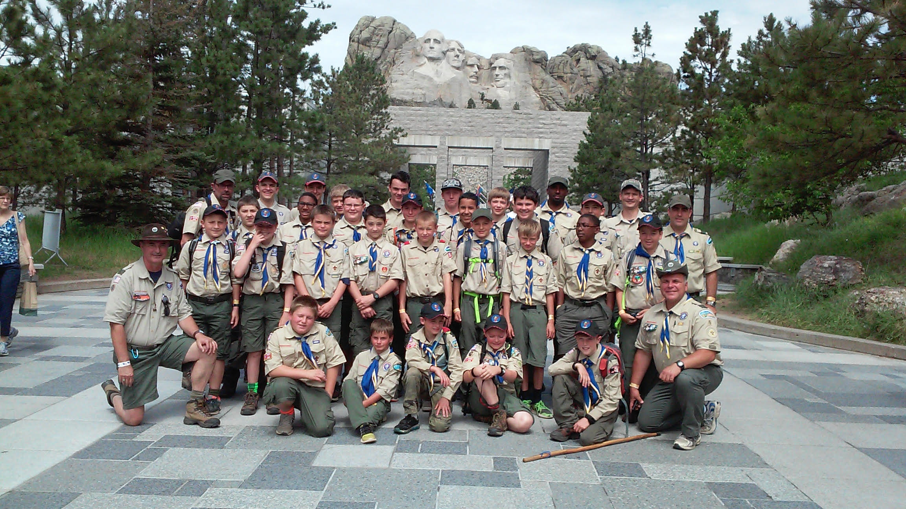

I have been an intern with Northrop Grumman for the past three summers, where I gained extensive experience in software development, machine learning, and hardware management. In my first summer (2022), I joined an agile development team where I quickly adapted to a complex software baseline. I took on various tasks, such as implementing new features and developing machine learning algorithms. During this time, I also created thorough documentation for machine learning implementations and run instructions to ensure the reproducibility of my work. Additionally, I developed a web scraping script to tag an airplane ADS-B dataset, which was later used in further machine learning processes. A key achievement from this period was training a convolutional neural network to identify unique hardware fingerprints of transceivers. Enabled by an incredible technical manager and a tight-knit team, I was honored to receive Northrop Grumman's New Technology Award in the summer of 2022.
During my second summer (2023), I worked in a cleared environment, where I had the opportunity to contribute to simulations of various satellite architectures using AFSIM. Due to the classified nature of the work, I am unable to go into specifics, but this experience allowed me to expand my knowledge in system simulations and satellite architecture.
In my third summer (2024), I assumed ownership of several key hardware assets, including drones, communication systems, batteries, and 3D printers. I successfully completed a project involving image-based geolocation through the use of an AI-driven automatic target recognition system. Additionally, I led the migration of our software from ROS1 to ROS2 and implemented a Kalman filter-based system to improve target tracking predictions. Over the summer, I also participated in three "fly days," where our team conducted live demonstrations of our code for autonomous target detection and geolocation, showcasing the real-world applications of our work.
To see projects go to project page
Significant Classes I've taken
Foundational Classes
Programming languages: Python, Java, C++, html,
Environments and softwares: VS Code, MATLAB, Qartus II
3d printing, fusion360: Highly recomend that if you are going to start 3D Printing, you should do a build kit.
I had the pleasure of being a part of an incredibly strong boy scout troop that taught me more than I could have ever hoped for. The abundance of practice and no small part in mentorship from my close friend Don Kenny grow my skills in leadership, perseverance, and problem-solving at an astounding rate. In just 3 short years I earned the rank of Eagle Scout. During that time I was the Senior Patrol Leader of our 50-member troop where I held the responsibility of organizing meetings, leading outings, and mentoring younger scouts to help them grow in their skills and confidence.
Beyond my troop, I was inducted into the Order of the Arrow, Scouting's National Honor Society, where I achieved Brotherhood membership. On top of that I was invited to participate and later instruct at National Youth Leadership Training (NYLT). NYLT has a strong focus on teamwork, communication, and decision-making through hands-on activities and scenarios designed to simulate real leadership challenges.


Aside from the support my family has given me, boy scouts has had the largest impact on my development. One day I hope to give back to the program as much as it gave me.
Camping
Snowboarding
Scuba Diving
Krav Maga
Obstacle Course Racing
Surfing
Cooking
Racing Drone Assembly
Ice Baths!
Lifeguard, First aid, CPR and AED cert (OSHA?)
Dirtbiking